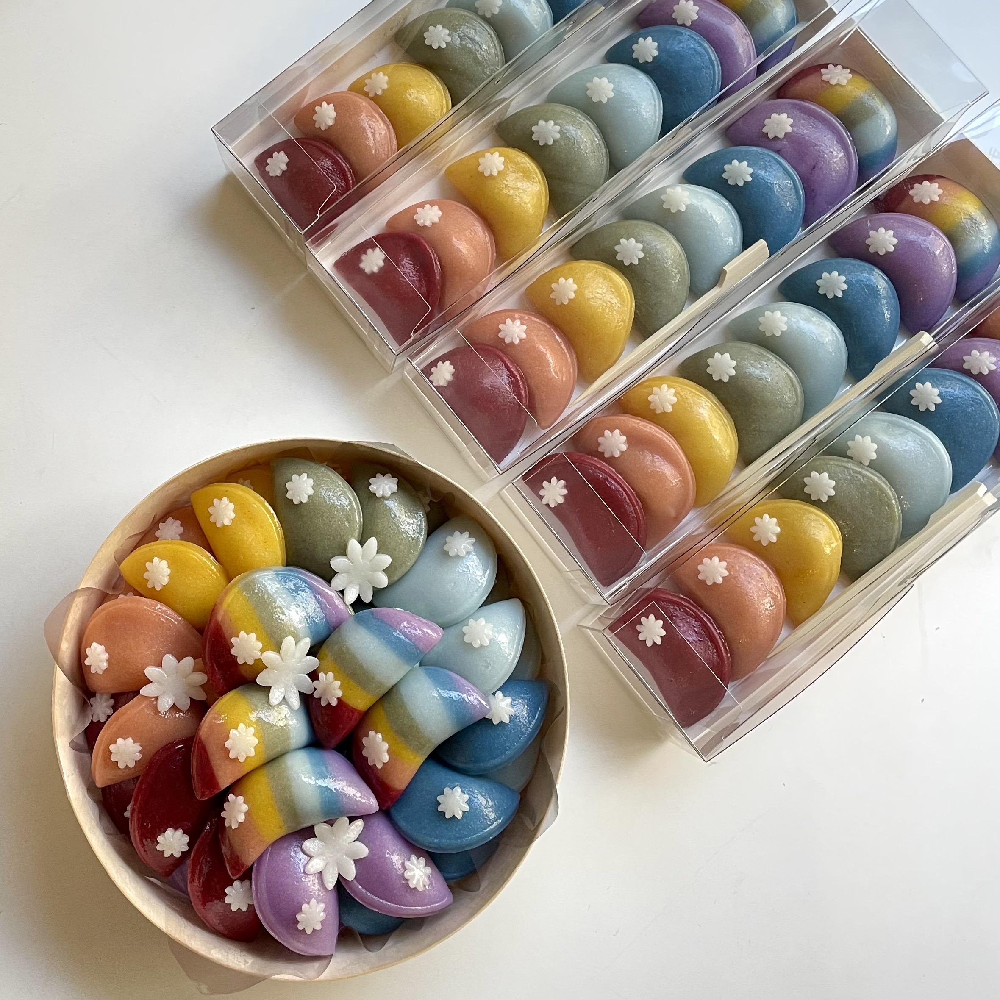
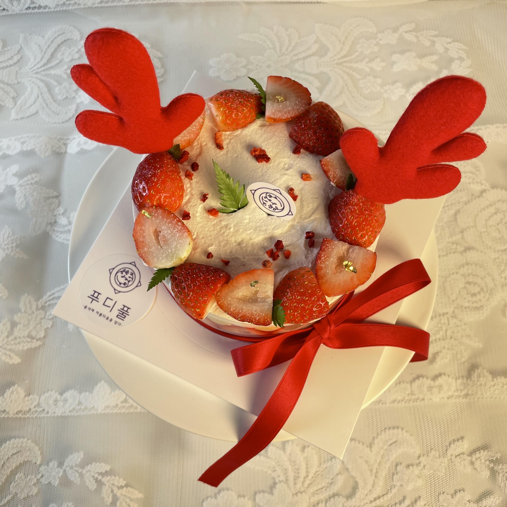
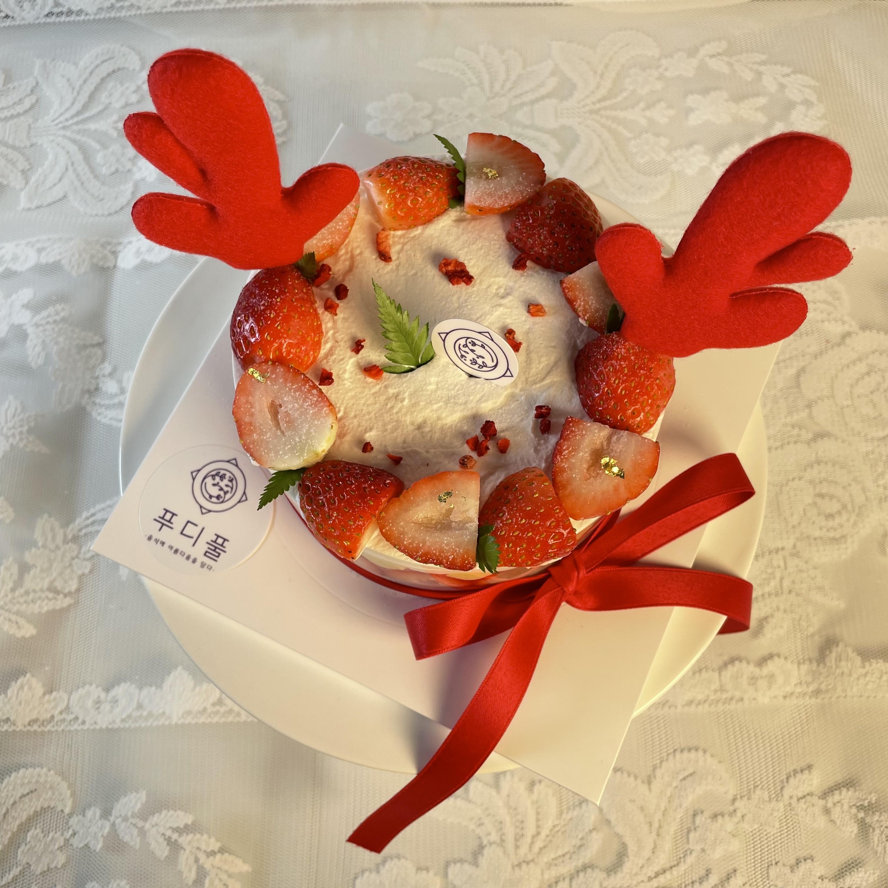

Food + Beautiful 음식의 아름다움을 추구하는
푸디풀 Foodiful 홈페이지에 오신것을 환영합니다
푸디풀에 대하여 궁금하시면 이곳을 눌러주세요
천연 색소를 이용해 알록달록 물들인 "흑임자 꽃다식"
예쁘고 맛도 좋은 흑임자 꽃다식은
차랑도 잘 어울리지만 와인과도 잘 어울리는 디저트랍니다.
입안에 가득 퍼지는 고소함 가득한 흑임자 꽃다식은 건강하기까지한 디저트라
남녀노소 부담없이 드실 수 있는 디저트에요!
입안에 가득 퍼지는 고소함 가득한 흑임자 꽃다식은 건강하기까지한 디저트라
남녀노소 부담없이 드실 수 있는 디저트에요!


먹는방법
따듯한 차와 함께 먹는다
천연 색소를 이용해 무지개 색으로 물들인 "무지개 바람떡"
무지개 바람떡은 색도 예쁘지만 쫄깃쫄깃하고 달콤해서 맛도 너무너무 좋답니다💜
무지개 바람떡도 예쁜 보자기 포장을 기본으로 해드리니 선물하기에도 너무너무 좋겠죠?

무지개 바람떡도 예쁜 보자기 포장을 기본으로 해드리니 선물하기에도 너무너무 좋겠죠?

먹는방법
따듯한 차와 함께 먹는다
천연 색소를 이용해 무지개 색으로 물들인 "떡 케이크"
무지개바람떡은 색도 예쁘지만 쫄깃쫄깃하고 달콤해서 맛도 너무너무 좋답니다💜
무지개 바람떡도 예쁜 보자기 포장을
기본으로 해드리니 선물하기에도 너무너무 좋겠죠?
 

먹는방법
따듯한 차와 함께 먹는다